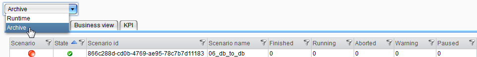
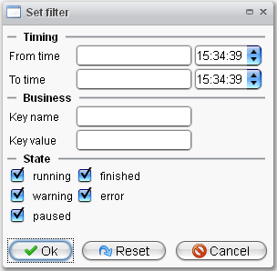

Process Monitoring

Topic content
The long time archive is used for storing Orchestra process information durably. Change the drop down menu to "Archive", if you want to look at the entries from the archive.

Here all ongoing and completed processes can be monitored. Based on a traffic light system you are able to recognize whether there have been faulty / broken process instances for a scenario (red light) or whether all previous runs finished correctly (green light).
Process monitoring – Overview
For more detailed runtime information of process instances double click the desired scenario and you are switching to the details view. Here you find name, start / end time and business-key information of all running processes and their current status.
Process monitoring – Scenario Details
Running
Finished
Error
Warning
It is also possible to view the process model with all of runtime details by double clicking a process instance. Additionally you can have a look at the data which is processed by this single interface run.
Process monitoring - processed data
For restricting the process selection, a filter for the provided processes can be used. The filter can be set in the detail view.

Here, the filter can be configured according to the desired criteria.
If you search for a business key here, the table orc_process_state will be searched. During the runtime, they key-value-pairs will stored there as strings with a maximum length of 1024 characters. A more flexible search is possible with the register "Business view". There another table is used. For more information, look here: Business View